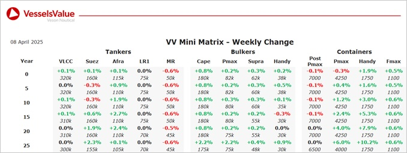

inWeekly Vessel Valuations Report09/04/2025

Bulkers:Bulker Values have firmed slightly this week, owing to sales of vessels such as Sea Charm,Sea Marathon and 134 (Hull) Nantong Xiangyu
Panamax BC Sea Charm (76,000 DWT, Feb 2003, Tadotsu Tsuneishi) sold to unknown Chinese buyers for USD 7.7 mil, VV Value USD 7.09 mil
Kamsarmax BC Sea Marathon (81,900 DWT, Sep 2015, Qingdao Wuchuan) sold SS/DD Due to Modion Maritime Management for USD 18.4 mil, VV Value USD 16.69 mil
Ultramax BC 134 (Hull) Nantong Xiangyu (63,600 DWT, Nov 2025, Nantong Xiangyu) to unknown Greek buyers for USD 35 mil, VV Value USD 34.51 mil
Handy BC Lago Di Cancano (37,700 DWT, Jan 2014, Qingshan Shipyard) sold to undisclosed buyers for USD 14 mil, VV Value USD 14.41 mil
Tankers:Tanker values have remained mostly stable over the last week with older tonnage Suezmax and Aframax values firming further owing to recent deals
LR2 Omera Legacy (107,100 DWT, May 2005, Daewoo) sold to Unknown Hong Kong buyers for USD 25 mil (SS/DD Due), VV Value USD 25.92 mil
MR1 (Chemical/Product) SW Cap Ferrat I (36,000 DWT, Mar 2002, STX Offshore) sold to Unknown Chinese buyers for USD 7 mil (DD Due), VV Value USD 8.41 mil
Containers:Midage and older vessels are up this week, following some recent sales
Panamax SSG Edward A Carter (3,739 TEU, Aug 2001, Samsung) sold to MSC for USD 27 mil, VV Value USD 22.5 mil
Sub Panamax Xin Xin Tian 2 (2,401 TEU, Apr 2007, Naikai Setoda) sold to undisclosed buyers for USD 25 mil, VV Value USD 20.3 mil
